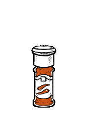

chile powder
Chile powder refers to dried, crushed (and sometimes smoked) chipotle, habanero, ancho, guajillo, piri piri, kashmiri, etc. This is different than chili powder. There are no other added ingredients. Chili powder contains other ingredients like oregano, paprika, pepper, cumin, garlic powder, onion powder, and/or salt.
Homemade ancho chile powder recipe:
Roast three medium-sized ancho chiles in a pan, then remove them and allow to cool. Seed the anchos and cut them into strips and then process them in a spice grinder with the cumin seeds. Use that in your chili, and then store what’s left over in a sealed jar. Use it quickly, it grows stale fast.